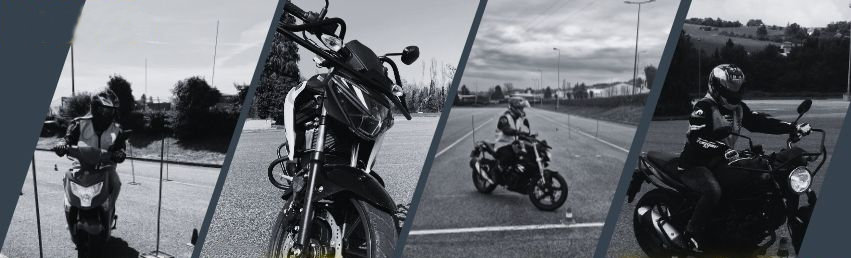

Deux-roues · cinq formations · dès 14 ans
Moto
de 50 à 800.
Du scooter au gros cube, en passant par le 125 et l'A2. Cinq formations, trois motos d'école, et des enseignants qui font ça depuis des années — Laurent enseigne l'auto et la moto chez nous depuis 2007.

Comment ça s'enchaîne
Le deux-roues se prend par étapes.
Chaque permis ouvre le suivant, et certaines marches ne demandent que sept heures. Voici l'ordre — vous n'êtes pas obligé de commencer en bas.
Nos formations moto
Cinq formations, en détail
Scooter — permis AM, 2 roues
CyclomoteurLe BSR, ou permis AM, n'est pas un examen du permis de conduire mais une formation théorique et pratique obligatoire pour conduire un cyclomoteur à partir de 14 ans.
À savoir : l'obtention de l'ASSR de 1er ou 2e niveau, ou de l'ASR, est impérative pour valider la partie théorique.
Permis A1 — le 125
Suzuki GSX-S125Le permis A1 est accessible dès l'âge de 16 ans et permet la conduite d'une cylindrée inférieure à 125 cm³, d'une puissance inférieure à 15 ch. Il nécessite de passer l'examen du code de la route et d'effectuer une formation minimale de 20 h de conduite.
Formation 7 h pour conduire un 125
Suzuki GSX-S125Vous avez déjà obtenu le permis B depuis au moins deux ans ? Vous pouvez conduire une 125 cm³ après avoir simplement suivi une formation de 7 h, destinée à vous sensibiliser à la conduite d'un deux-roues et à bien le prendre en main.
Les documents sont réduits au minimum : une photo d'identité et une photocopie du permis de conduire.
Permis A2
BMW G310RLe permis A2 est accessible dès l'âge de 18 ans et permet la conduite d'une cylindrée intermédiaire, d'une puissance maximale de 47 ch, pendant une durée de 2 ans minimum — et cela peu importe votre âge. La formation minimale est de 20 h de conduite, sauf pour les titulaires du permis A1, pour qui elle est ramenée à 15 heures.
Permis A — la passerelle
Suzuki GSX-800Le permis A est accessible au bout de 2 ans de permis A2 et permet de conduire une cylindrée « gros cube » d'une puissance supérieure à 35 kW, c'est-à-dire au-delà de 48 ch. Pour y prétendre, il faut simplement suivre une formation de 7 h en auto-école.
L'examen A1 et A2
Deux épreuves, et trois plateaux à passer.
C'est la partie qui inquiète le plus, et c'est celle qui se travaille le mieux : le plateau, ça s'apprend. On y passe le temps qu'il faut, sur notre piste, avant d'aller en circulation.
Le permis A et la formation 125 en 7 h, eux, ne comportent aucun examen.
Le déroulé
- Épreuve hors circulation — le plateau lent Maîtrise de la moto à basse vitesse, sans le moteur puis avec.
- Deux plateaux rapides Évitement et freinage d'urgence, à allure soutenue.
- L'interrogation orale Sur les fiches de sécurité routière, dans la même épreuve.
- Épreuve en circulation En ville et sur route, avec l'inspecteur en liaison radio.
Nos motos
Trois motos d'école, une par catégorie.
On apprend sur la machine qui correspond au permis qu'on passe — pas sur celle qui restait au garage.
Suzuki GSX-S125
Suzuki GSX-S125
Permis A1 · formation 7 h
BMW G310R
BMW G310R
Permis A2 · 47 chevaux
Suzuki GSX-800
Suzuki GSX-800
Permis A · passerelle 7 h
Vous hésitez entre l'A1, l'A2 et la formation 7 h ?
C'est le cas le plus fréquent, et ça se règle en deux minutes : répondez à quelques questions, on vous dit quelle formation vous correspond, ce qu'il faut apporter, et les aides auxquelles vous avez droit.